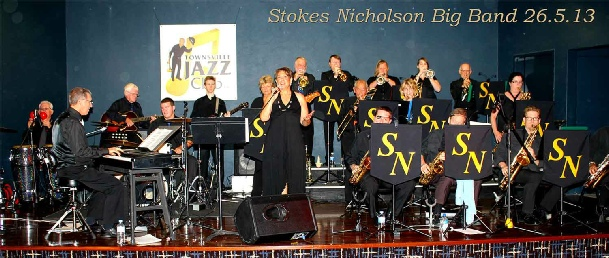

--- Notice Board ---
Posted 24-Mar-15
Chord Organ Volunteer Singers / MusiciansOur Parish Priest, Fr Mick Peters, is trying to development and foster a community for our 6 PM Vigil Mass at St Josephs on the Strand. I'm helping by organising an event format, where I invite our members to bring a plate for a buffet and I provide music, or friends who can sing or perform. Now that we are achieving some success, we need more people who can sing or play music. I'm open to any kind of singing or performing so long as it is not too controversial. My preference would be for an artist to sing a medley of old time favorites.
Mass starts at 6pm and finishes about 10 to 7. If you would like to take part, please call Merle Trembath 0418882633 anytime.
Posted 21-March-15
TCB logo CALL OUT FOR MUSOSCalling all Musos, entertainers, performers. We are looking to book performers/musicians/entertainers for a family friendly festival at the Ingham Tyto Wetlands on the 23rd of May. This inaugural annual event is a family fun day in the parklands and we are looking for appropriate acts. We are looking for a wide variety of bands and entertainers from our local and surrounding areas. Deadline for initial submissions 29 March 2015. Artists will need to be insured for public liability.

If you are interested please email details, examples or links to your work and a quote including travel expenses for performing at the event to the Event Stage Manager Emile Griffiths -mutec.audio@gmail.com see our Facebook page
Posted 17-Mar-15
Chord Organ Rouvas Academy of SingingI have been in the music industry in Sydney for over 30 years in the capacity of singing teacher, stage performer, singer and musician. My daughter Diana Rouvas was a finalist in the 2012. The Voice television show and she is a testament to what can be achieved with correct vocal training. Allow me to show you her technique and give yourself the opportunity to excel as a vocalist. Skype lessons also available

Visit rouvasacademyofsinging.com.au or phone John 0404 044 823
Posted 09-Mar-15
Chord Organ Music teaching by Effortless TechniqueAre you struggling to master sections of your pieces at tempo? Are you stressing that you won't be prepared because you don't have enough time to practice? Would you like to learn efficient and effective practice skills and strategies to help you play those difficult sections with confidence and ease and to the best of your ability?

Visit us on Facebook Email Cassandra Fixter or phone 0423 626 501